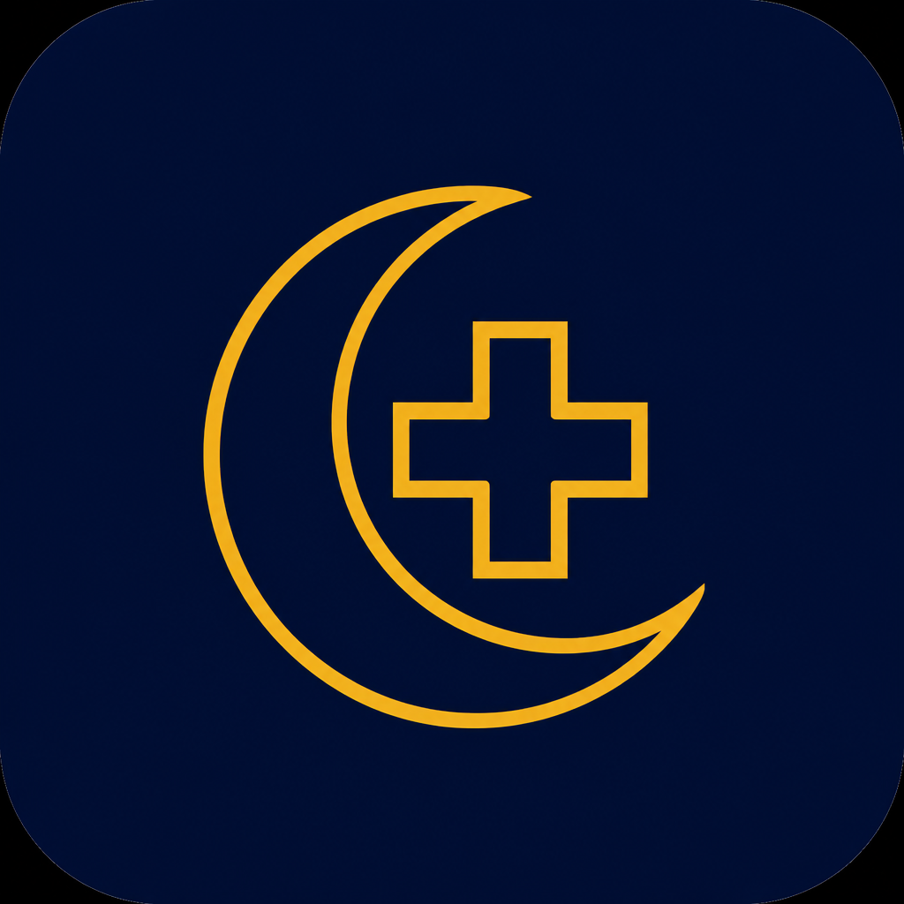

Project · iOS · Preparing for the App Store
NightOwl Responders
Peer-to-peer triage for people covering a shift on a personal phone. Private invite-only groups, short-lived topics, and encrypted phone-to-phone chat — with no NightOwl server holding your message history.
Contact us Privacy Terms of use Support
Built for on-call life
When you are covering from home, you need a fast way to ask colleagues for help — without putting overnight chatter into a permanent company archive. NightOwl keeps conversations in private groups, on the phones of people who were invited, and lets topics expire after the cover window.
How it works
Phone → phone chat
Messages travel over encrypted peer-to-peer links (WebRTC). NightOwl does not operate a chat backend that stores or relays message bodies.
iCloud is only the doorbell
Apple iCloud / CloudKit is used so devices can find peers who are online. Chat content is not stored in iCloud.
Private groups only
Join by email invite code or by showing a QR code for an admin to scan in person. There is no public directory.
Topics that expire
Discussions use 24, 48, or 72 hour windows so overnight cover does not pile up forever.
Notices & on-call POC
One-shot notices (no replies) and an on-call point-of-contact with priority alerts that never include message content.
On-device leak alert
Optional sensitivity aid flags things like patient identifiers or secrets before you send. It can miss or false-alarm — you remain responsible for what you post.
What NightOwl is not
- Not a clinical record system, EPR, or official rota tool.
- Not a public social network or open chat room finder.
- Not a permanent messenger — topics expire; there is no cloud restore of chat history.
- Not dependent on a SubaByte chat server — if peers cannot connect (for example some strict networks; STUN only, no TURN), sync may fail until conditions improve.
Optional support funding
NightOwl has no ads and no paid feature gates. Optional one-time tips or a small Apple subscription help fund development. Support unlocks nothing — everyone gets the same peer-to-peer app. Payments are handled by Apple. See Terms of use for subscription details.
Requirements
- iPhone with iOS 17 or later
- Sign in with Apple
- iCloud signed in on the device (required for peer discovery)
Legal & App Store links
- Privacy Policy — how NightOwl handles data
- Terms of Use — including auto-renewable support subscriptions
- Support — help and contact